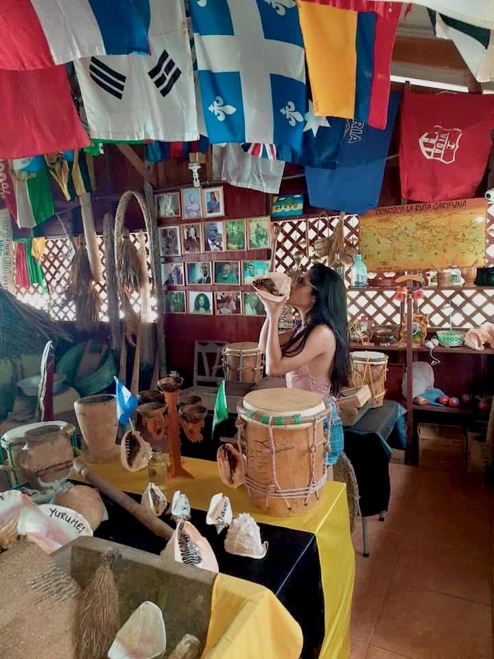
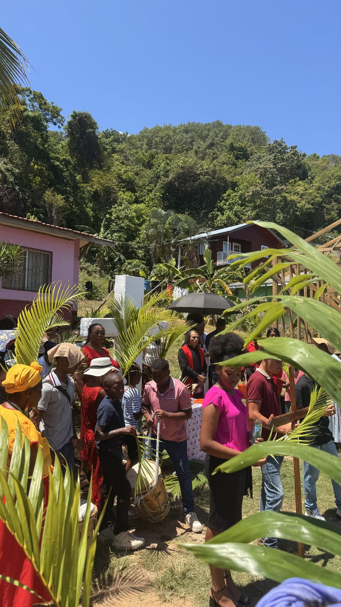

Machuca, king crab, and a cold beer over the water.
We are a family kitchen and a sports bar in Punta Gorda — the oldest Garífuna settlement in Honduras — looking out over a working fishing village. The fish came in this morning. The recipes came here in 1797.
What Yurumei is
A kitchen, a bar, and a room full of our history.
We are named after Yurumein — the island our ancestors were exiled from in 1797. Everything here is an answer to that.
Order these
The plates people drive across the island for
If it is your first time: machuca, and if there is king crab that day, have it with king crab. The full menu is one page away.

Eat inside the collection
The dining room is also a museum.
Over the years the family has gathered the things that tell the Garífuna story and put them where people eat: the drums, the dugout tools, the mortars we still mash plantain in, photographs of the elders, and a map of the Ruta Garífuna along the coast.
Guests started leaving their national flags behind. There are dozens now, hanging over the tables from just about everywhere. Look up while you wait for your machuca and find your own.
Read our story
Made here
Our own guifiti, under our own label.
Guifiti is the Garífuna medicine drink: roots, bark and herbs steeped in rum until it turns the colour of strong tea. Every family has its own recipe and nobody agrees on whose is best.
We steep ours here, bottle it here, and put the Yurumei label on it ourselves. Have a glass with your meal, or take a bottle home — it travels better than a souvenir.
See the bar listOff a ship for the day?
You have time. It is worth the drive.
Punta Gorda is about 45 minutes east of Mahogany Bay, at the end of the island where the resorts stop and the villages start. Leave the port in the morning and you will be back long before all aboard.
Our family also runs Martinez East End Tours, so if you would rather not deal with taxis, we can drive you both ways and bring you here for lunch.

Come and eat with us.
Walk in and we will find you a table. For a group, or if you are on a schedule, send a message the day before so the kitchen is ready.
, Roatán, Honduras